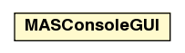

jason.runtime
Class MASConsoleGUI

java.lang.Object
 jason.runtime.MASConsoleGUI
jason.runtime.MASConsoleGUI
public class MASConsoleGUI
- extends java.lang.Object
the GUI console to output log messages
| Methods inherited from class java.lang.Object |
clone, equals, finalize, getClass, hashCode, notify, notifyAll, toString, wait, wait, wait |
isTabbedPropField
public static java.lang.String isTabbedPropField
get
public static MASConsoleGUI get()
- for singleton pattern
hasConsole
public static boolean hasConsole()
setTitle
public void setTitle(java.lang.String s)
getFrame
public javax.swing.JFrame getFrame()
addButton
public void addButton(javax.swing.JButton jb)
setPause
public void setPause(boolean b)
isPause
public boolean isPause()
append
public void append(java.lang.String s)
append
public void append(java.lang.String agName,
java.lang.String s)
close
public void close()
setAsDefaultOut
public void setAsDefaultOut()